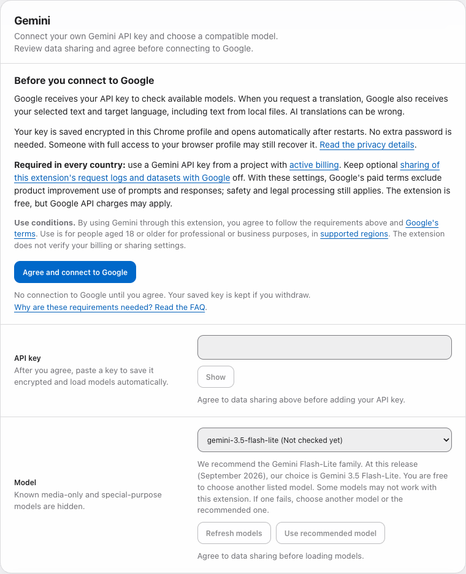
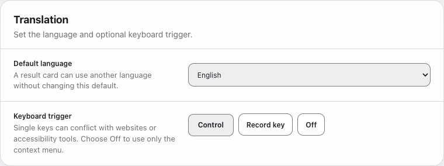

Get started with AI Translator
Get your own Google API key, choose a language, and translate your first selection.
1. Get your API key
An API key lets this extension use Gemini through your Google account. Keep it private, like a password.
This extension is for people aged 18 or older, for work or business use, in Google's supported countries and regions. In every country, your API key must belong to a Gemini project with active billing. Keep optional sharing of this extension's request logs and datasets with Google off.
By using this extension, you agree to follow these conditions, the Google API Terms and the Gemini API Additional Terms. Do not use it if you cannot meet these conditions. The extension does not verify these facts or ask for identity documents.
-
Open Google AI Studio
Sign in to your Google account. Accept Google's terms if asked.
Open Google AI Studio -
Create or choose a key
On the API Keys page, choose Create API key and follow Google's steps to choose or create a project. A project groups your API use and any billing. If you are new to AI Studio, Google may have already created a default project and key.
If your existing project is missing, open Dashboard > Projects > Import projects. Import your project, then return to API Keys.
Before using the key, follow Google's billing guide to check that its project has active billing. A paid Gemini app subscription is not a substitute for API project billing. Keep optional sharing of this extension's request logs and datasets with Google off; read Google's log-sharing policy. Private project logging is separate from sharing.
-
Copy your key
Copy the key from AI Studio. Return to this extension's Settings and read the data-sharing details. Choose Agree and connect to Google, then paste your key into the API key field. It is encrypted and saved automatically, and your model list loads. Wait for the result before continuing.

In AI Translator: agree to data sharing first, then paste your own key. The model list is checked after the encrypted key is saved.
Google can change these screens. For current steps or key errors, read Google's API key guide. Use a new key from AI Studio if an older key no longer works.
2. Choose your translation settings
-
Choose a model
We recommend the Gemini Flash-Lite family. For this release in September 2026, our choice is Gemini 3.5 Flash-Lite. Use it when it is available in your model list.
You can choose another listed model. Some models may not work with this extension. If a model fails, choose another one or use the recommended model.
-
Choose your target language
Choose the language you want to read from Default language. The choices follow Google's documented Gemini languages. Translation quality can vary by language and text.

Choose the language for your translations, then finish setup. -
Finish setup
Keep the Control key trigger, record another key, or choose Off to use only the right-click menu. Choose Finish setup at the bottom of Settings. You can change these choices later with Save Preferences.
3. Translate your first selection
Open a normal web page and select a short piece of text. Right-click and choose Translate Selected Text, or press and release your chosen key. The result appears beside the selection.
If the extension was just installed or reloaded, refresh the web page first. Chrome settings pages, the Chrome Web Store, and the built-in PDF viewer do not allow translation.
The toolbar popup shows the latest result. Once setup is complete, it opens the standard view. If you remove your API key, the welcome guide appears again.
FAQ: keys, costs and privacy
Why do I need my own API key?
This extension is designed to send requests straight to your Google project using your own key. This is a design choice, not a Chrome rule. Your key allows requests and links them to your usage and billing. Never share it in screenshots or public messages. See Google's API key guide.
Why is active billing required, instead of just recommended?
Chrome's Limited Use rules, points 3 and 5, limit data use to the extension's purpose and related operations. Some unpaid Gemini use allows wider training and human review. Paid terms exclude product improvement use, but allow limited safety and legal retention and processing outside the EU.
To address this conflict, the developer requires active project billing worldwide. A recommendation would still allow unpaid use. Google's own regional rule requires Paid Services for apps offered in the European Economic Area, UK and Switzerland. See Gemini terms: Use Restrictions, Unpaid Services and Paid Services.
Why must optional sharing with Google stay off?
Sharing logs or datasets can allow training and human review even with active billing. Do not contribute this extension's data through dataset sharing or feedback. Private logging for your own project is allowed under this rule. See Google's logging policy: Data that can be shared and How we use your data.
Is the extension free if I need paid API access?
Yes. The extension is free, but Google API charges may apply. A paid Gemini app subscription does not replace API project billing. See how to check billing and Google's API prices. The extension does not verify billing or sharing settings.
Why do I need to choose Agree and connect to Google?
Chrome's Disclosure Requirements, points 1 and 2, call for clear data-use details and informed consent. Our button lets you make that choice before any Google API request. It does not check your identity or billing, or give permission to share other people's private information.
What exactly goes to Google?
Model checks send your key and ask for available models. Translation sends the selected text, target language, model and translation instructions. This includes selected local-file text. The extension does not add the full page, page address or browsing history. Google also receives connection details such as your IP address. The developer receives none of these requests. Only send text you may share.
How is my key saved and opened automatically?
Your API key is saved encrypted. It and its encryption key stay in this Chrome profile for automatic use after restarts. They are not synced. Someone with access to the profile may still recover the API key. This is not an OS keychain or password-protected vault. Language, model and trigger choices can sync. Only the latest result stays for the browser session; there is no analytics or translation history.
An upgrade encrypts and checks an older saved key before deleting its plain text copies. If this fails, the old copy stays saved and requests remain blocked. Settings explains the error. Moving an old key does not bypass agreement.
Can I withdraw my agreement or remove my key?
In Settings, Withdraw data agreement blocks new requests and cancels active ones locally, keeping your key and preferences. Remove saved key deletes the saved key, its encryption key and model cache. Neither recalls data already sent or guarantees that a sent request becomes free. Revoke the key in AI Studio to disable it at Google too.
Your agreement stays saved across normal restarts and updates. If the notice changes, requests wait until you review it and agree again.
Why is this for adults and work or business use?
Google requires users to be at least 18, with professional or business use in supported regions. See Gemini terms: Age Requirements and Use Restrictions and available regions. This extension has no separate eligibility checkbox or identity check.
Why have a privacy policy as well as this notice?
The notice explains the choice before you connect. The policy gives full data, storage and removal details. Chrome's Privacy Policy rules require this for extensions handling user data. Read our privacy policy. These notices do not mean Google has approved the extension.
AI translations can be wrong. Check important wording before relying on it.